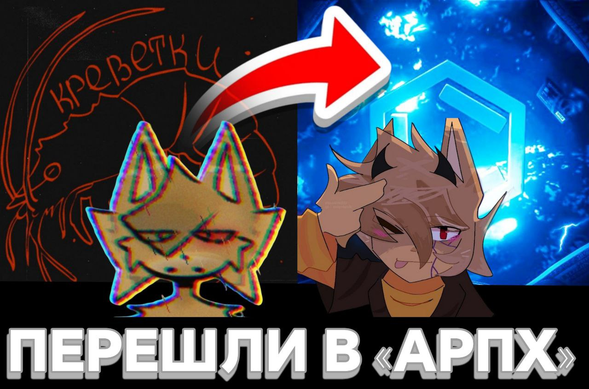

👀 Вчерашним днём Бискас написал пост «финал рк скоро». Но! Он начал дублировать этот же пост до настоящего момента времени.
‼️ Фандом отреагировал, повторяв текст поста «финал рк скоро» в свои Telegram-Каналы, что даже мы в этом участвовали
📈 Так завирусился, что можно сказать это — мем внутри БисФД и он до сих пор «форсится».
❓ Причина этого мема стало, что клип «Раньше было лучше» еще не сделан и неизвестно когда будет закончен. И это забавно!
18 августа 2025 · РокСтоун
⚡ Топ-3 «Гачеров» (Gachers) БисФД по количеству подписчиков
1. Lefix — 752 подписчика, одна из самых популярных деятелей БисФД, обрела большую популярность во второй половине 2024.
2. Салярка — 144 подписчика, один из самых последних деятелей БисФД, который набрал популярность в коммьюнити, свою популярность он набрал в 2025.
3. Черешня — 78 подписчиков, деятель, имеющий особый стиль, изначально мало снимал гачу.
13 августа 2025 · НБФД

Сегодня произошло нечто невероятное! 🤯
Эдиторы TWIXSKAS и
Попкорн ушли из команды
Креветок,
после чего были приняты в команду
АРПХ на испытательный срок 😌
В своём последнем посте
(ссылка)
владелец команды «АРПХ» Нео сообщила, что Твикс и Попкорн теперь участники команды.
И если всё будет хорошо, они станут полноценными участниками 😉
Твикс и Попкорн это никак не комментировали, лишь заявили, что это было их «Семейное решение».
Так же сегодня в команду Нео вступила эдитор
Персик.
Причины её решения вступить в команду также не известны 🤨
На данный момент в команде «АРПХ» уже 31 человек 🤩
А что вы думаете о таких неожиданных переменах? 🤔
9 августа 2025 · НБФД
⚠️ Важная информация о Бискасе
Здравствуйте подписчики, к сожалению мы нашли одну информацию, которую должны знать все. 😥
‼️ Сразу говорим, что мы не призываем никого ненавидеть и хейтить Бискаса, мы нейтрально относимся к ситуации! ‼️
Сейчас стала известна информация, что Иван (Бискас) испортил жизнь Марте Зихт (Жопа33). ☹️
Мы спросили, что он сделал:
> Как минимум халатность и игнор в кучу важных моментов, особенно, когда мне угрожали постоянно.
> В один раз и вовсе наорал, когда я буквально была в истерике и самом пике селфхарма, просто потому, что не так понял ситуацию, и даже не извинился — слова Марты.
Так же Марта упомянула, что из-за всей этой ситуации и оказанного давления, ей приходится ходить к психотерапевту. 😔
> Психологи даже говорили что КПТСР очень возможен, который, ващет, хрен там вылечить можно, ток немного облегчить, и то, не факт, и ради этого надо как лошадь пахать — так же слова Марты.